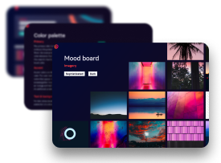
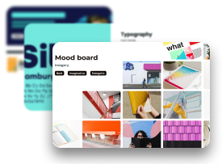
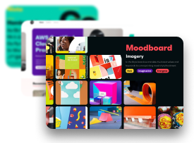
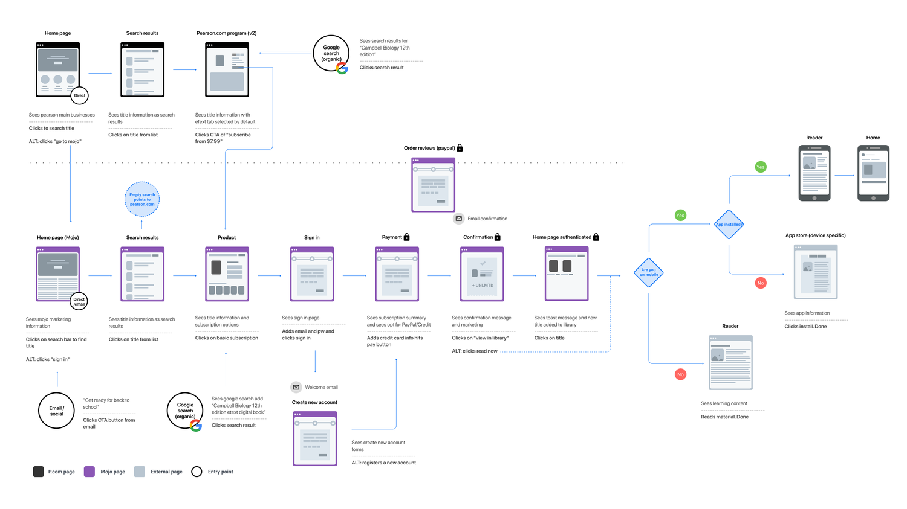
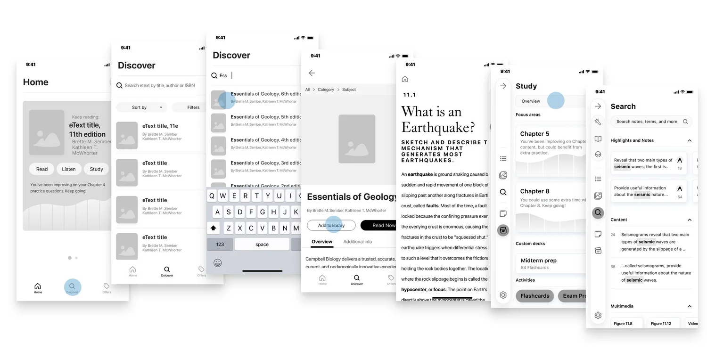
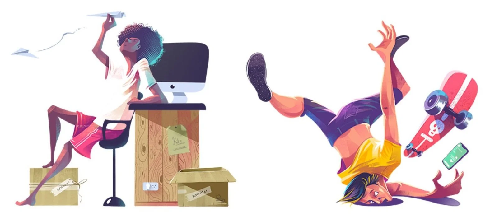
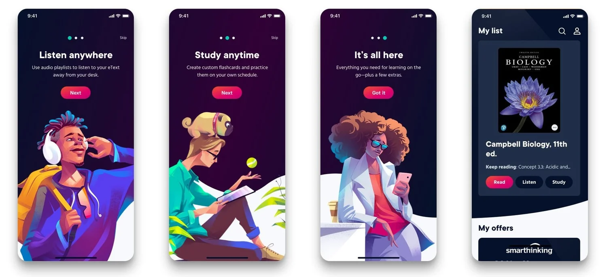
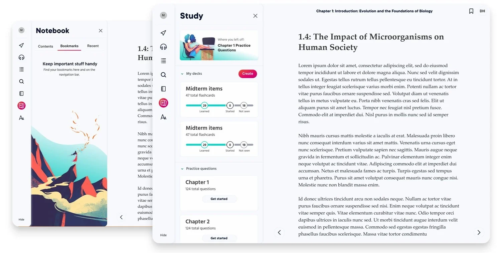

Pearson+
A learning app built with illustration, brand, and product design working together.
- Company
- Pearson
- Scope
- Product design and brand
- Collaborator
- Illustrator @samji_illustrator (opens in a new tab)
- Platform
- Learning app
The brief
Moodboards, journey mapping, prototypes, custom illustration, and a brand language, built with the brand and product teams and presented to partners, shareholders, and executives.
Moodboards
Early concepts, working title "Rojo," shown to the executive team to build brand and product consensus.



Journey mapping and prototyping
Months mapping ideal user flows, from search and sign-up to reading and study.


The art
A vibrant learning app. The illustrator built characters and scenes for onboarding.



Brand language
Tone of voice and microcopy, defined with the brand and product-management teams to guide the app.
Brand language deck (PDF) (opens in a new tab) · Pitch deck (PDF) (opens in a new tab)